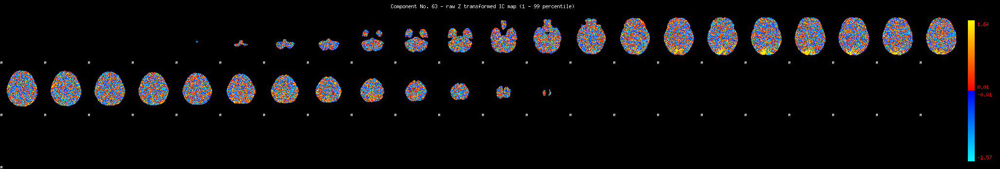
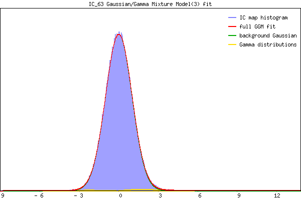

IC_63 Mixture Model fit
Means : 0.000000 2.734654 -2.534350
Vars : 1.000000 3.037520 0.794482
Prop. : 0.986216 0.010855 0.002929
This page produced automatically by MELODIC Version 3.15 - a part of FSL - FMRIB Software Library.